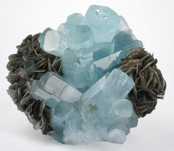
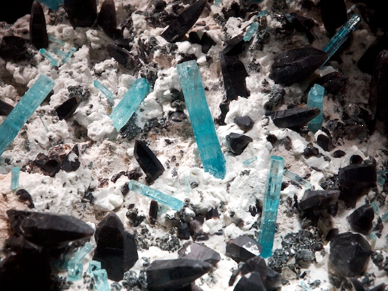
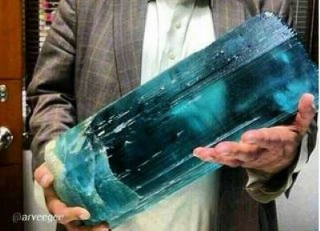
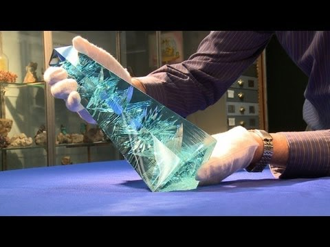

♦⟡7 Cudownych Klejnotów⟡♦
♦ Akwamaryny ♦
♦ ⟡ ♦

♦ O Akwamarynach ♦
Akwamaryn - odmiana berylu (którego inną odmianą jest Szmaragd), minerału należącego do krzemianów. Turkusową barwę zawdzięcza jonom żelaza.
♦ Właściwości ♦
| ♦ Grupa ♦ | ♦ Skład chemiczny ♦ | ♦ Twardość (skala Mohsa) ♦ | ♦ Najczęstrze Barwy ♦ | ♦ Połysk ♦ |
| Tlenki | Al2BeO4 | 8,5 | Zielony, turkusowy, fioletowy, czerwony | Szklisty |
♦ Ciekawostki ♦
- Nazwa "akwamaryn" pochodzi z łaciny. "Aqua marina" znaczy "woda morska", i wiąze się z jego barwą.
- Jest kamieniem urodzinowym osób urodzonych w marcu.
- Kryształy akwamarynu mogą osiągać ogromne rozmiary. Największy waży 110 kg i jest przechowywany w British Museum w Londynie. Największy oszlifowany Akwamaryn nazywa się Dom Pedro, waży 45kg i jest przechowywany W National Museum of Natural History w Waszyngtonie.
- Z akwamarynu wykonane było berło Stanisława Augusta Poniatowskiego.
- Podobnie jak Szmaragdy, może przejawiać inkluzję.
♦ Galeria ♦
-

Nieoszlifowany Akwamaryn
-

Akwamaryn w przyrodzie
-

Taki tam mały kryształek
-

Akwamaryn Dom Pedro